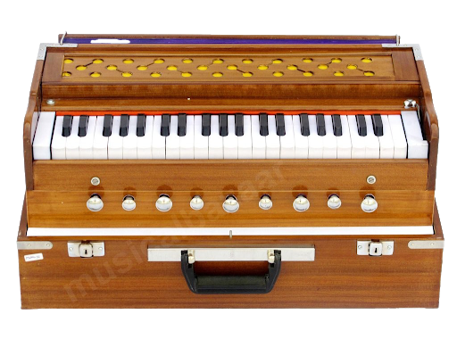
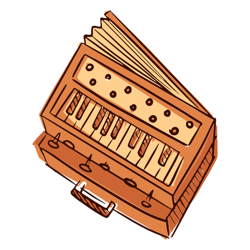
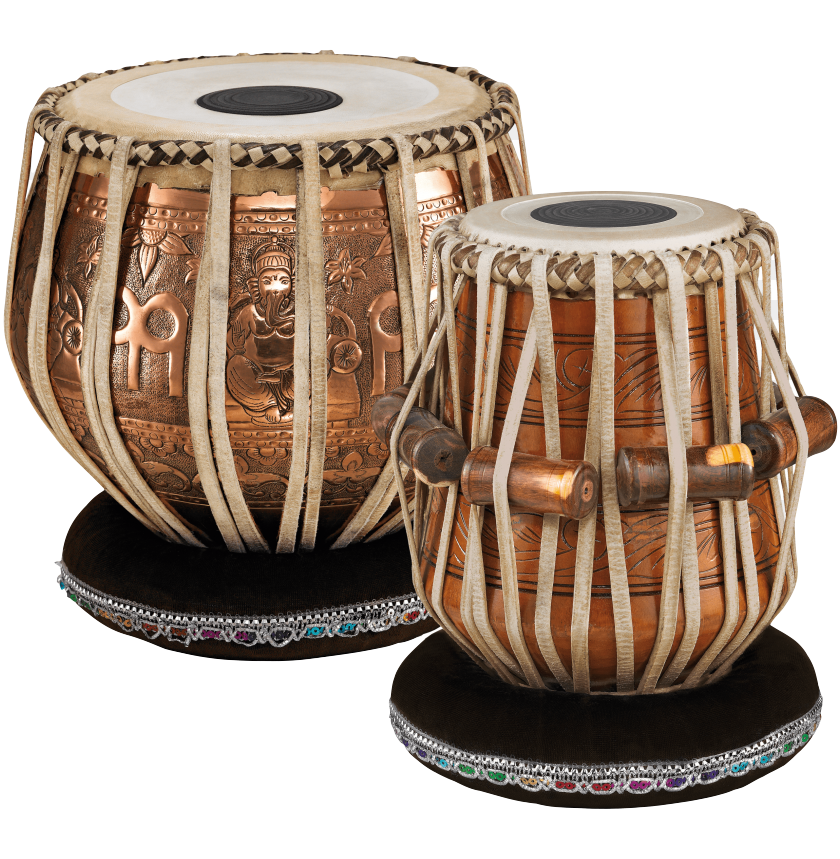
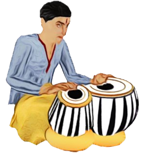
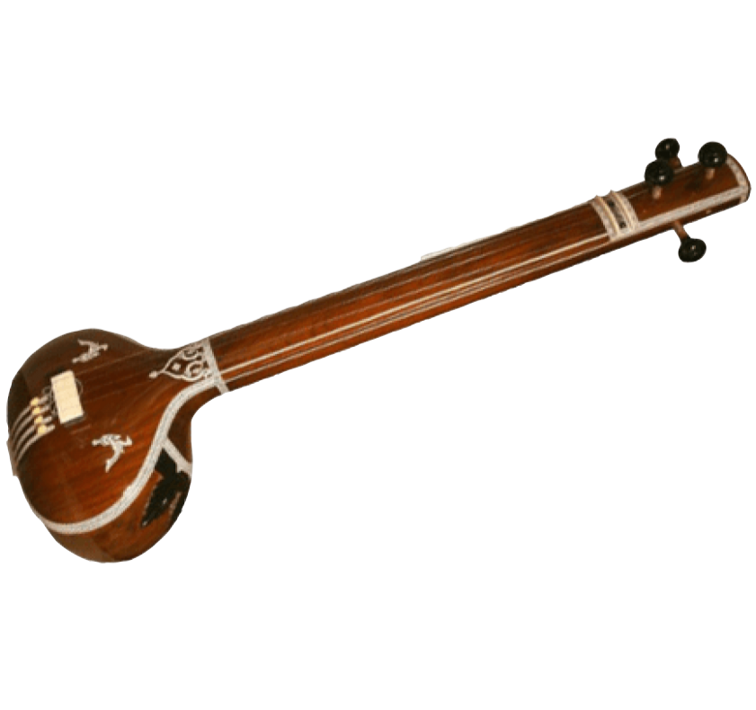
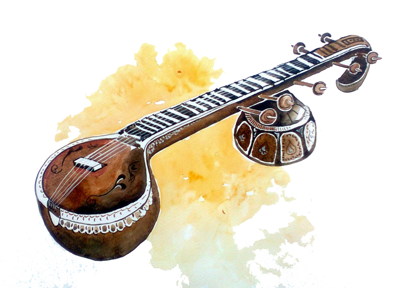

A harmonium, also called a "melodeon", "reed organ" or "pump organ", is a keyboard instrument that is a lot like an organ. It makes sound by blowing air through reeds, which are tuned to different pitches to make musical notes.
The hand-pumped harmonium was created by Dwarkanath Ghose so that the instrument could be played while the player was sitting down on the floor. It is used in India, Pakistan, Nepal, Afghanistan, Bangladesh and in other South Asian countries as an accompanying instrument in Hindustani classical music, Sufi Music, Bhajan and other devotional music
 The tabla is an Indian drum used for North Indian Music. The tabla invention is found in India. It is also used for classical, popular and devotional music of Pakistan.
The instrument is two hand drums of different size and shape, similar to bongos. They make different sounds. The drums are treble and bass drum. Tabla is played hitting the fingers on the drum head and sliding the palm to create a modulating sound. A lot of sounds can be created from the tabla by changing how you use your hands.
 The sitar is a plucked stringed instrument used in Hindustani classical music.The instrument was invented in medieval India and flourished in the 16th and 17th centuries and arrived at its present form in 18th-century India.
Used widely throughout the Indian subcontinent, the sitar became popularly known in the wider world through the works of Ravi Shankar, beginning in the late 1950s and early 1960s. A sitar can have 18, 19, 20, or 21 strings. Six or seven of these are played strings which run over curved, raised frets, and the remainder are sympathetic strings which run underneath the frets and resonate in sympathy with the played strings.
 